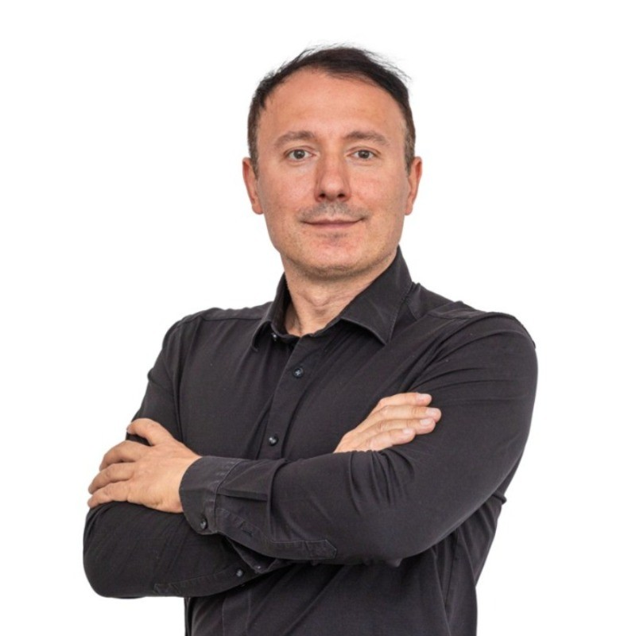
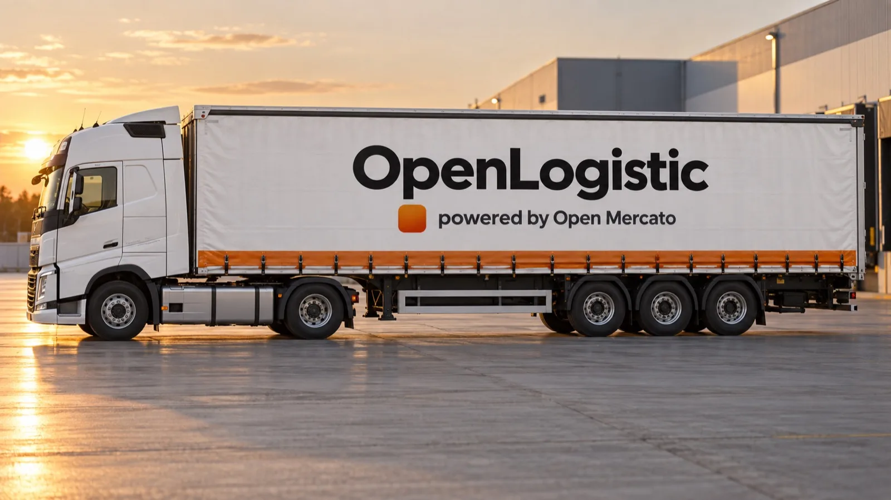

The shipment your contracted lanes do not cover.
OpenLogistic books ad-hoc freight. A dispatcher enters the pickup, the drop, the vehicle class and the time window. The platform finds a carrier and books the order. It is built for the exception, not for running your fleet.
- Pickup
- Kraków
- Drop
- Brno
- Vehicle class
- Van 3.5 t Box 12 t Curtain 24 t
- Time window
- 14:00–16:00

“One urgent load should not cost you an afternoon on the phone. Send it here and read the answer.”

How an ad-hoc order runs
Five stations. The dispatcher works the first one, and the order carries its own status through the rest.
-
Enter the order
Pickup, drop, vehicle class and the time window the load has to run in.
-
Quote requested
The order goes out to carriers who run that route and hold that vehicle class.
-
Awaiting carrier
Offers come back. Accept one before the cut-off and the order is booked.
-
In transit
The carrier is on the route. The status moves without anyone making a call.
-
Delivered
The route closes. The order keeps its times and its carrier on file.
One order, from request to delivered
This is the board a dispatcher watches. The order keeps its route, its vehicle class and its time window in one place, and the status moves as the run does. Nobody has to ring the carrier to ask where the van is.
- Quote requested
- Awaiting carrier
- In transit
- Delivered
The cut-off is the last moment a carrier can be accepted and still make the time window.
Tell us what needs moving
Two fields. Describe the shipment and leave an email. We read it and come back with a quote or a question.
Write it the way you would say it down the phone. Route, vehicle class, time window, and the part of the load that makes it awkward. We book the one-off run. Moving your contracted lanes across is a different conversation.
Request logged
Your request is in. Here is what happens next.
- A dispatcher reads the route, the vehicle class and the time window you gave.
- The order goes out to carriers who run that route and hold that class.
- The answer comes back to , with a quote or the one question we need first.